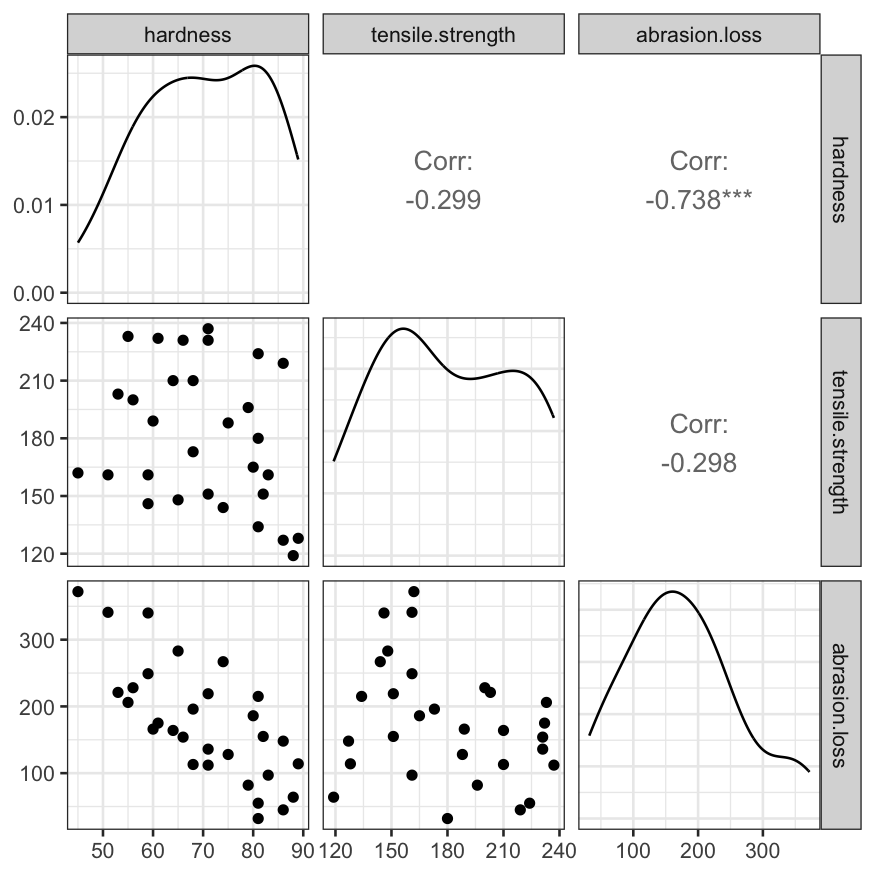
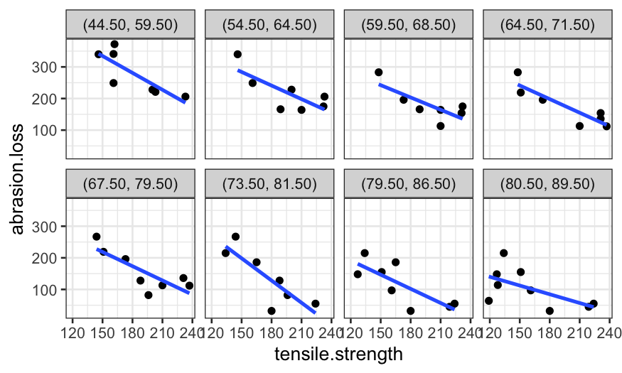
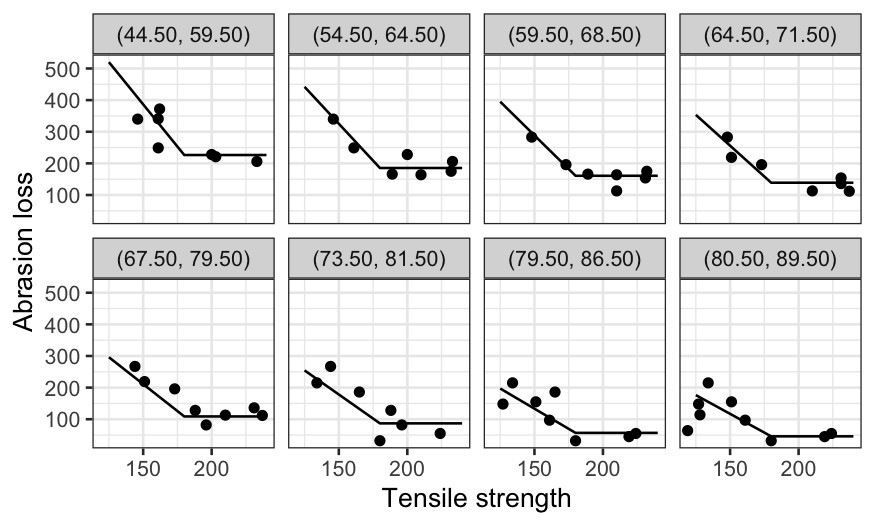

Stat 470/670 Lecture 12: More interactions, coplots,
and modeling
Julia Fukuyama
Today: building and checking models with trivariate data
One more example with a slightly complicated model
Rubber data
Reading: Cleveland pp. 180-187, 200-213
The data frame rubber in lattice.RData contains three
measurements on 30 specimens of tire rubber.
The variables are:
hardness: How much the rubber rebounds after being
indented.
tensile.strength: The force per cross-sectional area
required to break the rubber (in kg/cm2).
abrasion.loss: The amount of material lost to abrasion
when rubbing it per unit energy (in grams per hp-hour). This gives you
an idea how fast the tire will wear away when you drive. If we had to
choose a “response” variable, it would be this one.
Pairs plot of the three variables
library(GGally)
ggpairs(rubber[,c("hardness", "tensile.strength", "abrasion.loss")])

Coplot of abrasion loss and tensile strength given hardness
coplot_hardness = make_coplot_df(rubber, "hardness", number_bins = 8)
ggplot(coplot_hardness, aes(x = tensile.strength, y = abrasion.loss)) +
geom_point() +
facet_wrap(~ interval, ncol = 4) +
stat_smooth(method = "lm", se = FALSE)
## `geom_smooth()` using formula = 'y ~ x'

ggplot(coplot_hardness, aes(x = tensile.strength, y = abrasion.loss)) +
geom_point() +
facet_wrap(~ interval, ncol = 4) +
stat_smooth(method = "loess", method.args = list(degree = 1), se = FALSE)
## `geom_smooth()` using formula = 'y ~ x'

An easier way to make a coplot with ggplot is to use the
cut_number function:
ggplot(rubber, aes(x = tensile.strength, y = abrasion.loss)) +
geom_point() +
facet_grid(. ~ cut_number(hardness, n = 4)) +
stat_smooth(method = "loess", method.args = list(degree = 1, span = .9), se = FALSE)
## `geom_smooth()` using formula = 'y ~ x'
Several versions of coplots of abrasion loss and hardness given
tensile strength
coplot_ts = make_coplot_df(rubber, "tensile.strength", number_bins = 8)
ggplot(coplot_ts, aes(x = hardness, y = abrasion.loss)) +
geom_point() +
facet_wrap(~ interval, ncol = 4) +
stat_smooth(method = "lm", se = FALSE)
## `geom_smooth()` using formula = 'y ~ x'

ggplot(coplot_ts, aes(x = hardness, y = abrasion.loss)) +
geom_point() +
facet_wrap(~ interval, ncol = 4) +
stat_smooth(method = "loess", method.args = list(span = .5, degree = 1), se = FALSE)
## `geom_smooth()` using formula = 'y ~ x'

ggplot(coplot_ts, aes(x = hardness, y = abrasion.loss, color = interval)) +
stat_smooth(method = "loess", method.args = list(span = .5, degree = 1), se = FALSE)
## `geom_smooth()` using formula = 'y ~ x'
ggplot(coplot_ts, aes(x = hardness, y = abrasion.loss, color = interval)) +
stat_smooth(method = "lm", se = FALSE)
## `geom_smooth()` using formula = 'y ~ x'
Building a model
Let’s start off building a model with no interaction but with a
non-linear function of tensile.strength.
To do this, we need to:
- Decide on a non-linear function to use.
- Implement this function in R.
- Apply the function to
tensile.strength.
Deciding on a function
We want our non-linear function to be linear for values of
tensile.strength below 180, flat for values above 180, and
continuous. One such function is \[
f(x) = \begin{cases}
x - 180 & x \le 180\\
0 & x > 180
\end{cases}
\]
Writing the function in R
The way we would write this in R would be
tslow = function(x) {
return((x - 180) * (x < 180))
}
Applying the function to tensile.strength
And to create a variable corresponding to this transformation of
tensile strength, we could use
rubber %>% mutate(ts.low = tslow(tensile.strength))
However, we don’t need to do that because Cleveland has already done
it for us (the variable ts.low already exists in the data
set and is exactly this function of tensile.strength).
Fitting and visualizing the model
To fit the model:
library(MASS)
rubber.rlm = rlm(abrasion.loss ~ hardness + ts.low, data = rubber,
psi = psi.bisquare)
To visualize the fitted model, we need to get fitted values from the
model on a grid of values of the two predictors.
library(broom)
rubber.grid = expand.grid(hardness = c(54, 64, 74, 84),
tensile.strength = c(144, 162, 180, 198)) %>% data.frame
rubber.grid = rubber.grid %>% mutate(ts.low = tslow(tensile.strength))
rubber.predict = augment(rubber.rlm, newdata = rubber.grid)
rubber.predict
## # A tibble: 16 × 4
## hardness tensile.strength ts.low .fitted
## <dbl> <dbl> <dbl> <dbl>
## 1 54 144 -36 357.
## 2 64 144 -36 289.
## 3 74 144 -36 222.
## 4 84 144 -36 154.
## 5 54 162 -18 298.
## 6 64 162 -18 230.
## 7 74 162 -18 162.
## 8 84 162 -18 94.8
## 9 54 180 0 238.
## 10 64 180 0 171.
## 11 74 180 0 103.
## 12 84 180 0 35.3
## 13 54 198 0 238.
## 14 64 198 0 171.
## 15 74 198 0 103.
## 16 84 198 0 35.3
Once we have the fitted values, we can make a coplot of the fitted
model. We’ll start with hardness as the given variable:
ggplot(rubber.predict) +
geom_line(aes(x = tensile.strength, y = .fitted)) +
facet_grid(~ hardness) +
scale_y_continuous("Fitted abrasion loss") +
theme(axis.text.x = element_text(angle = 90, vjust = 0.5, hjust=1))

ggplot(rubber.predict) +
geom_line(aes(x = tensile.strength, y = .fitted, color = factor(hardness, ordered = TRUE))) +
guides(color = guide_legend(title = "Hardness")) +
scale_y_continuous("Fitted abrasion loss") +
theme(axis.text.x = element_text(angle = 90, vjust = 0.5, hjust=1))
Note that the first plot is a coplot, the second doesn’t have a name
but reports the same information in a different way.
Then a coplot with tensile.strength as the given
variable:
ggplot(rubber.predict) +
geom_line(aes(x = hardness, y = .fitted)) +
facet_grid(~ tensile.strength) +
scale_y_continuous("Fitted abrasion loss") +
theme(axis.text.x = element_text(angle = 90, vjust = 0.5, hjust=1))

ggplot(rubber.predict) +
geom_line(aes(x = hardness, y = .fitted, color = factor(tensile.strength, ordered = TRUE))) +
guides(color = guide_legend(title = "Tensile strength")) +
scale_y_continuous("Fitted abrasion loss") +
theme(axis.text.x = element_text(angle = 90, vjust = 0.5, hjust=1))
Residuals
rubber.resid = data.frame(rubber, .resid = residuals(rubber.rlm))
ggplot(rubber.resid, aes(x = tensile.strength, y = .resid)) + geom_point() +
stat_smooth(method = "loess", span = 1, method.args = list(degree = 1, family = "symmetric")) +
geom_abline(slope = 0, intercept = 0) +
scale_y_continuous("Abrasion loss residuals")
## `geom_smooth()` using formula = 'y ~ x'
ggplot(rubber.resid, aes(x = hardness, y = .resid)) + geom_point() +
stat_smooth(method = "loess", span = 1, method.args = list(degree = 1, family = "symmetric")) +
geom_abline(slope = 0, intercept = 0) +
scale_y_continuous("Abrasion loss residuals")
## `geom_smooth()` using formula = 'y ~ x'

Coplots of the residuals
resid_co_hardness = make_coplot_df(rubber.resid, faceting_variable = "hardness", number_bins = 4)
ggplot(resid_co_hardness, aes(x = tensile.strength, y = .resid)) +
geom_point() +
facet_grid(~ interval) +
stat_smooth(method = "loess", method.args = list(degree = 1, family = "symmetric")) +
scale_y_continuous("Abrasion loss residuals")
## `geom_smooth()` using formula = 'y ~ x'
resid_co_ts = make_coplot_df(rubber.resid, faceting_variable = "tensile.strength", number_bins = 4)
ggplot(resid_co_ts, aes(x = hardness, y = .resid)) +
geom_point() +
facet_grid(~ interval) +
stat_smooth(method = "loess", method.args = list(degree = 1, family = "symmetric")) +
scale_y_continuous("Abrasion loss residuals")
## `geom_smooth()` using formula = 'y ~ x'

Second-round model
From the residual plots, it looks like we might actually do better
fitting an interaction between tensile.strength and
hardness.
Exercises:
- Refit a linear model that predicts
abrasion.loss using
an interaction between our non-linear transformation of
tensile.strength and hardness (i.e., change
abrasion.loss ~ ts.low + hardness to
abrasion.loss ~ ts.low * hardness).
- Plot the fitted values from the interaction model on the same grid
of predictor variables we used in the no-interaction model. How does the
form of the fits change when you add the interaction? Why is this?
- Make residual plots and coplots for the interaction model in the
same way we did for the no-interaction model. Do you like this model
better?
Final plots
rubber.rlm = rlm(abrasion.loss ~ hardness * ts.low, data = rubber, psi = psi.bisquare)
coplot_hardness = coplot_hardness %>% mutate(interval_mean = get_interval_means(interval))
rubber.grid.final = expand.grid(hardness = unique(coplot_hardness$interval_mean),
tensile.strength = c(125, 180, 240)) %>% data.frame
rubber.grid.final = rubber.grid.final |> mutate(ts.low = tslow(tensile.strength))
rubber.predict.final = augment(rubber.rlm, newdata = rubber.grid.final)
rubber.predict.final = merge(rubber.predict.final,
unique(coplot_hardness[,c("interval", "interval_mean")]),
by.x = "hardness", by.y = "interval_mean")
ggplot(coplot_hardness, aes(x = tensile.strength, y = abrasion.loss)) +
geom_point() +
geom_line(aes(x = tensile.strength, y = .fitted), data = rubber.predict.final) +
facet_wrap(~ interval, ncol = 4) +
scale_y_continuous("Abrasion loss") +
scale_x_continuous("Tensile strength")
